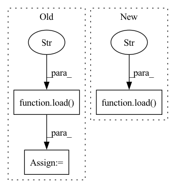

Pattern ID :24982
Before Change
def test_mnli_by_register(self):
test mnli by register
root = os.path.join(os.path.expanduser("~"), ".mindnlp")
_ = load(
"MNLI" ,
root=root,
split=("train", "dev_matched", "dev_mismatched"),
)
class TestMNLIProcess(unittest.TestCase):
r
Test MNLI_ProcessAfter Change
@pytest.mark.local
def test_mnli_by_register(self):
test mnli by register
_ = load(
"MNLI" ,
root=self.root,
split=("dev_matched", "dev_mismatched"),
)
@pytest.mark.dataset
@pytest.mark.local
def test_mnli_process(self):In pattern: SUPERPATTERN
Frequency: 5
Non-data size: 3
Instances Fragment ID: 76836357
Project Name: mindlab-ai/mindnlp
Commit Name: 793f1b4ce57c143af6fddfba99f7a153f416ba9e
Time: 2022-10-30
Author: lvyufeng@cqu.edu.cn
File Name: tests/ut/dataset/test_mnli.py
M Class Name: TestMNLI
N Class Name: TestMNLI
M Method Name: test_mnli_by_register(1)
N Method Name: test_mnli_by_register(1)
M Parent Class: unittest.TestCase
N Parent Class: unittest.TestCase
M File Name: tests/ut/dataset/test_mnli.py
N File Name: tests/ut/dataset/test_mnli.py
M Start Line: 62
M End Line: 67
N Start Line: 68
N End Line: 72
Before Change
def test_wikitext103_by_register(self):
test wikitext103 by register
root = os.path.join(os.path.expanduser("~"), ".mindnlp")
_ = load("WikiText103" ,
root=root,
split=("train", "valid", "test")
)
After Change
@pytest.mark.local
def test_wikitext103_by_register(self):
test wikitext103 by register
_ = load("WikiText103" ,
root=self.root,
split=("valid", "test")
)
Fragment ID: 76836359
Project Name: mindlab-ai/mindnlp
Commit Name: 793f1b4ce57c143af6fddfba99f7a153f416ba9e
Time: 2022-10-30
Author: lvyufeng@cqu.edu.cn
File Name: tests/ut/dataset/test_wikitext103.py
M Class Name: TestWikiText103
N Class Name: TestWikiText103
M Method Name: test_wikitext103_by_register(1)
N Method Name: test_wikitext103_by_register(1)
M Parent Class: unittest.TestCase
N Parent Class: unittest.TestCase
M File Name: tests/ut/dataset/test_wikitext103.py
N File Name: tests/ut/dataset/test_wikitext103.py
M Start Line: 58
M End Line: 62
N Start Line: 65
N End Line: 68
Before Change
log.info("testing: save")
save(m, "test_save_model.np")
log.info("testing: load")
m2 = load("test_save_model.np" )
future = m2.make_future_dataframe(df, periods=3)
forecast = m2.predict(df=future)
After Change
save(m, "test_model.pt")
log.info("testing: load")
m2 = load("test_model.pt" )
forecast2 = m2.predict(df=future)
// Check that the forecasts are the same
pd.testing.assert_frame_equal(forecast, forecast2) Fragment ID: 76836365
Project Name: ourownstory/neural_prophet
Commit Name: de87e17029a55c585ab6c8b04095422de345499d
Time: 2022-11-11
Author: karl.richter@tum.de
File Name: tests/test_utils.py
M Class Name: AnonimousClass
N Class Name: AnonimousClass
M Method Name: test_save_load(0)
N Method Name: test_save_load(0)
M Parent Class:
N Parent Class:
M File Name: tests/test_utils.py
N File Name: tests/test_utils.py
M Start Line: 32
M End Line: 44
N Start Line: 31
N End Line: 50
Before Change
def test_qnli_by_register(self):
test qnli by register
root = os.path.join(os.path.expanduser("~"), ".mindnlp")
_ = load(
"QNLI" ,
root=root,
split=("train", "dev", "test"),
)
class TestQNLIProcess(unittest.TestCase):
r
Test QNLI_ProcessAfter Change
@pytest.mark.local
def test_qnli_by_register(self):
test qnli by register
_ = load(
"QNLI" ,
root=self.root,
split=("dev", "test"),
)
@pytest.mark.dataset
@pytest.mark.local
def test_qnli_process(self): Fragment ID: 76836362
Project Name: mindlab-ai/mindnlp
Commit Name: 793f1b4ce57c143af6fddfba99f7a153f416ba9e
Time: 2022-10-30
Author: lvyufeng@cqu.edu.cn
File Name: tests/ut/dataset/test_qnli.py
M Class Name: TestQNLI
N Class Name: TestQNLI
M Method Name: test_qnli_by_register(1)
N Method Name: test_qnli_by_register(1)
M Parent Class: unittest.TestCase
N Parent Class: unittest.TestCase
M File Name: tests/ut/dataset/test_qnli.py
N File Name: tests/ut/dataset/test_qnli.py
M Start Line: 60
M End Line: 65
N Start Line: 67
N End Line: 71